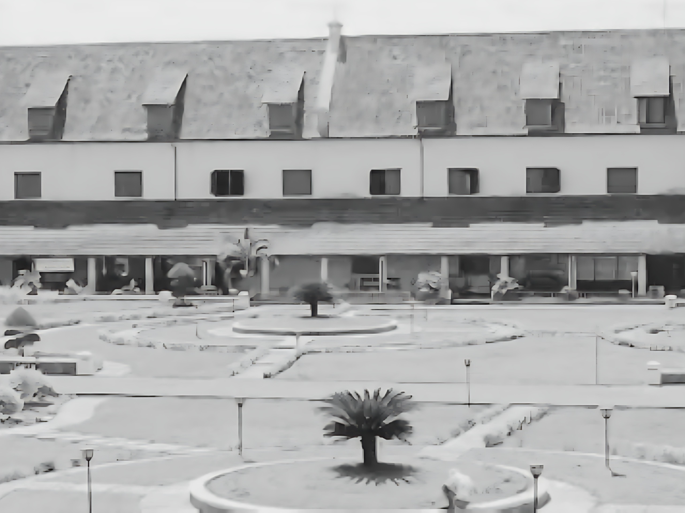

Museum La Galigo adalah museum yang menyimpan dan memamerkan sejarah serta budaya Sulawesi Selatan. Di dalamnya, pengunjung bisa melihat koleksi peninggalan kerajaan, adat istiadat, hingga kehidupan masyarakat masa lalu dalam suasana yang tenang dan modern.
Museum La Galigo menyimpan berbagai peninggalan bersejarah dari Sulawesi Selatan. Mulai dari artefak kerajaan, naskah kuno, hingga benda budaya Bugis-Makassar. Temukan kisah di balik setiap koleksi dan rasakan jejak sejarah yang masih hidup hingga kini.
LA GALIGO
Menulusuri warisan budaya Provinsi Sulawesi Selatan
Tentang Museum
Museum La Galigo adalah salah satu museum terbesar di Sulawesi Selatan yang menyimpan berbagai peninggalan sejarah, budaya, dan etnografi masyarakat Bugis, Makassar, Mandar, dan Toraja. Terletak di dalam kompleks Benteng Rotterdam, museum ini menjadi saksi kekayaan masa lalu yang penuh makna.
Temukan koleksi unik mulai dari manuskrip kuno, alat musik tradisional, pakaian adat, hingga peralatan kehidupan masa lampau. Setiap ruangan membawa Anda lebih dekat ke akar budaya Sulawesi Selatan.
Selami Warisan Hebat Berbagai suku di Museum La Galigo'
Dari kapal Phinisi hingga naskah kuno La Galigo, setiap sudut museum ini bercerita. Siap untuk petualangan budaya yang tak terlupakan?
4000+Koleksi Bersejarah
400+Pengunjung
4Suku asli
Sejarah
Koleksi
Visi Digital

Jejak Peradaban Sulawesi Selatan
Museum La Galigo bermula dari Celebes Museum yang didirikan pada 1938 oleh Pemerintah Hindia Belanda di Benteng Rotterdam. Setelah sempat terhenti, museum ini diresmikan kembali pada 1 Mei 1970 sebagai pusat pelestarian budaya Sulawesi Selatan.
Nama “La Galigo” merujuk pada tokoh legendaris dari Kerajaan Luwu serta naskah sastra Bugis kuno yang memuat nilai spiritual, sosial, dan budaya masyarakat Bugis-Makassar.
Harta Karun Etnografi
Klik pada kartu untuk melihat detail koleksi.
Bagan Tancap
Bagan Tancap
Terbuat dari bahan bambu, berbentuk empat persegi, tinggi, bagan tersebut dilengkapi dengan jala yang terletak pada bagian bawah, berfungsi sebagai tempat untuk menangkap ikan.
Bagang adalah salah satu sarana yang dipergunakan untuk menangkap ikan di sungai, danau dan laut. Bagang terdiri dari bagang tancap, bagang rakit/ bagang monang, dan bagang perahu (memakai satu atau dua perahu), berfungsi sebagai tempat nelayan memasang dan menunggu jaringnya.
Batu ike (pemukul kulit kayu), berasal dari Palu, Sulawesi Tengah, adalah alat bantu yang dipergunakan untuk memproses dan mengolah kulitkayu dengan cara memukul kulit kayu sampai halus untuk dijadikan pakaian.
Bendera Kamummue (replika), terbuat dari kain satin berbentuk persegi empat panjang dengan warna dasar ungu atau dalam bahasa Bugis disebut kamummu. Pada zaman dahulu setiap melaksanakan upacara tersebut adalah kelompok Andekarung.
Melalui teknologi visualisasi 3D, Museum La Galigo menghadirkan pengalaman baru dalam memahami artefak dan sejarah Sulawesi Selatan. Koleksi budaya yang sebelumnya hanya dapat dilihat secara langsung, kini dapat diakses secara virtual melalui tampilan digital yang imersif dan informatif.
Inisiatif ini menjadi bagian dari komitmen kami dalam melestarikan dan menyebarluaskan warisan budaya secara inklusif dan adaptif terhadap perkembangan zaman. Teknologi tidak menggantikan sejarah, namun menjadi jembatan agar generasi masa kini dapat lebih mudah menjangkaunya.
TEAM
Kreator
Galeri
Perahu Pinisi
Mahakarya maritim Nusantara.
Aksara Lontara
Sistem tulisan kuno Bugis-Makassar.
Badik Pusaka
Simbol kehormatan dan status.
Manuskrip Kuno
Catatan sejarah dan sastra.
Perhiasan Emas
Kemewahan era kerajaan.
TESTIMONIALS
APA KATA MEREKA
4.9
Berdasarkan 1.288 Ulasan
Dengar langsung dari para pengunjung yang telah merasakan pengalaman unik di Museum La Galigo. Kepuasan mereka adalah prioritas utama kami.
Dian Puspita
Travel Blogger
5.0
"Pengalaman yang luar biasa! Koleksinya sangat lengkap dan ditata dengan apik. Saya belajar banyak tentang sejarah Sulawesi Selatan di sini."
Budi Santoso
Sejarawan
4.5
"Sebagai seorang sejarawan, saya sangat terkesan dengan keaslian artefak dan naskah kuno La Galigo yang dipamerkan. Wajib dikunjungi!"
Sarah Abdullah
Mahasiswi Arkeologi
5.0
"Lokasinya strategis dan stafnya sangat ramah. Ini adalah tempat terbaik untuk belajar sambil berwisata budaya di tengah kota Makassar."
★★★★★
Berdasarkan Ulasan Pengunjung
Menyelami Warisan Budaya Sulawesi.
Saksikan cuplikan perjalanan menyusuri lorong waktu di Museum La Galigo. Temukan artefak menakjubkan dan dengarkan kisah di balik setiap koleksi yang menjadi saksi bisu peradaban besar di Sulawesi Selatan.